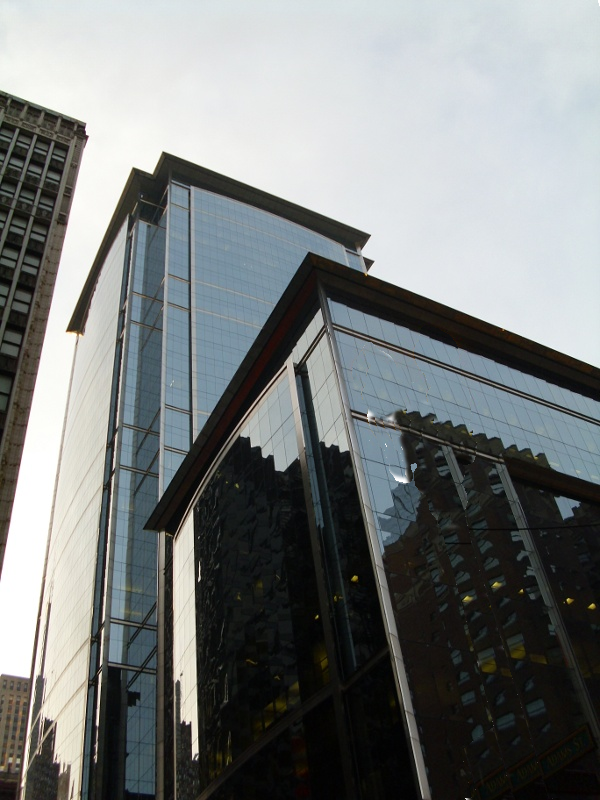
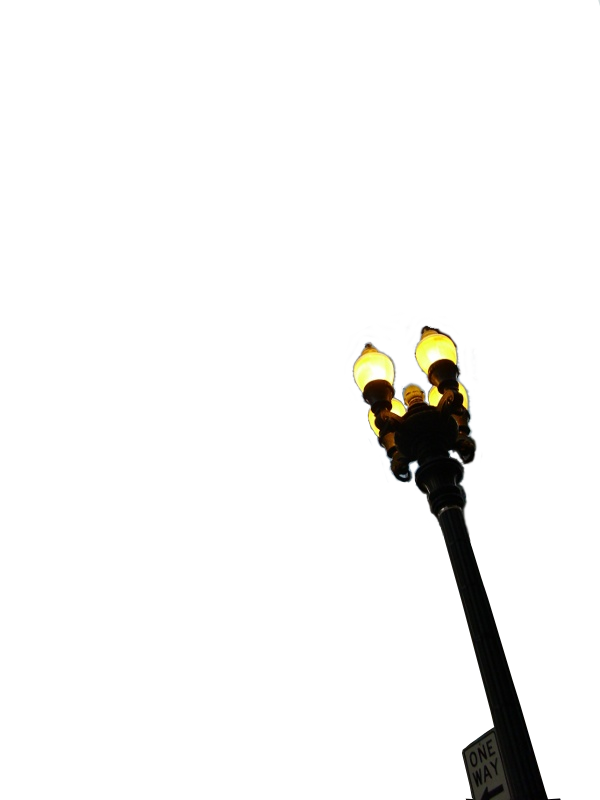
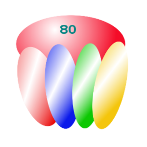
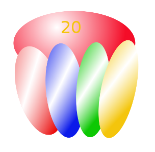

 
Images are in CSS-background
Images can be set in CSS-background or included as full-rights
HTML-elements in parallax-frame HTML-element.
PlaxBone
Minimal variant of paralax framework.
Concept:
Scroll event based JavaScript code rearranges CSS of frames and frame-children-images.
Configurable from HTML.
By default, aspect ratio is preserved.
No perspective depth implemented.
Browser-range: Android 2.3.5+, IE8+?.
Images are spritable.


Configuration
This widget can be configured right from HTML in "data-conf" attribute.
perspective is a distance from parent-base layer to an observer,
phase0 is an effective phase, phase0 is an array [top, left] shifts when pframe becomes visible
speed is a speed relative to parent p-frame speed
boxpx is a starting point at phase = 0
src is a Web-path to an image